Note: This page was originally created because the FLEEP widget was uncomfortable to read in many browsers. Jason Shiga has now put up as more comfortable scrolling version like this one so it's no longer so necessary.
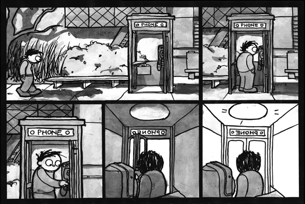
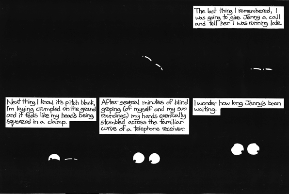
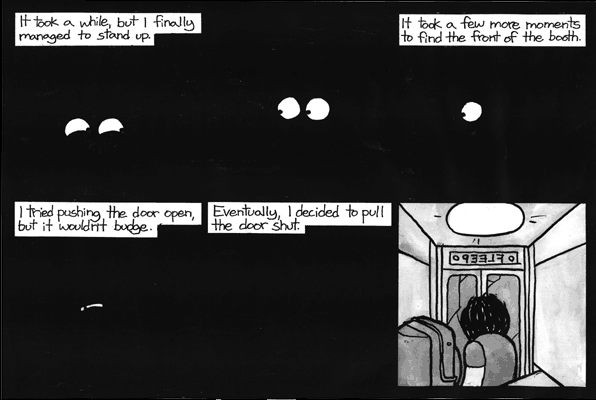
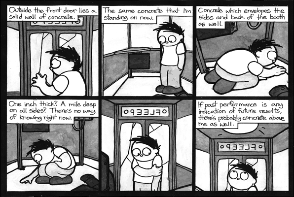
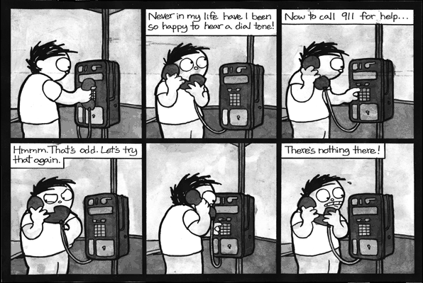
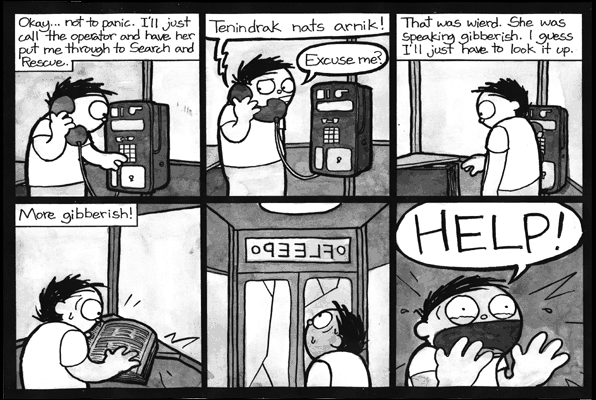
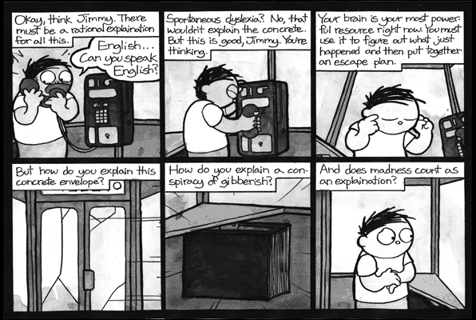
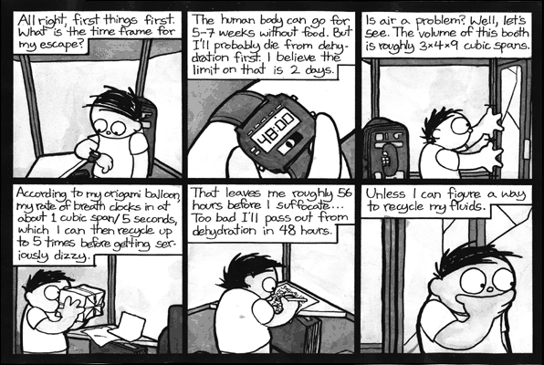
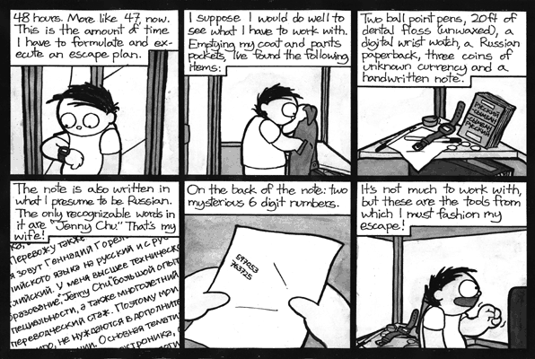
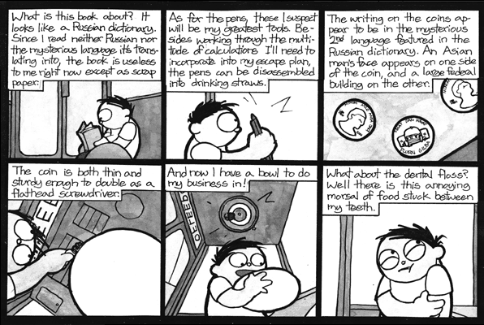
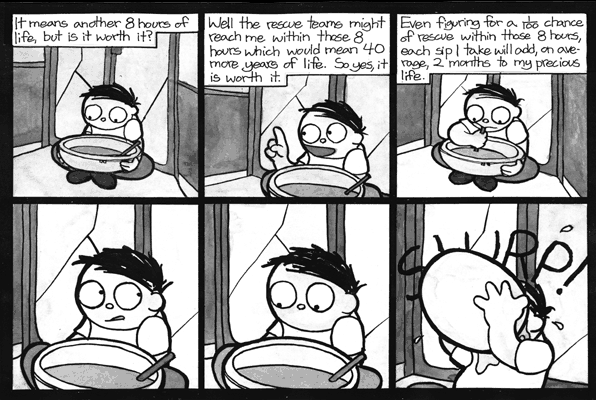
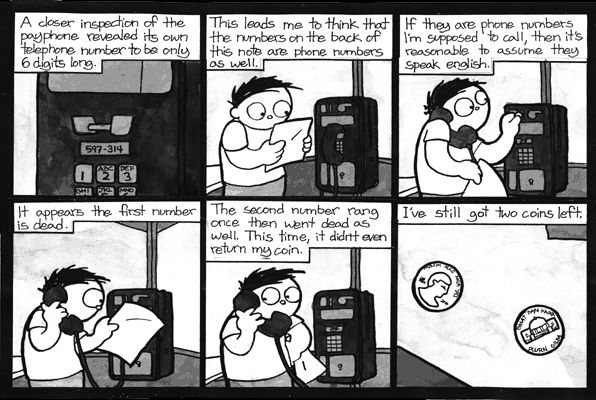
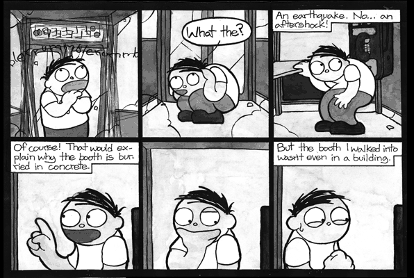
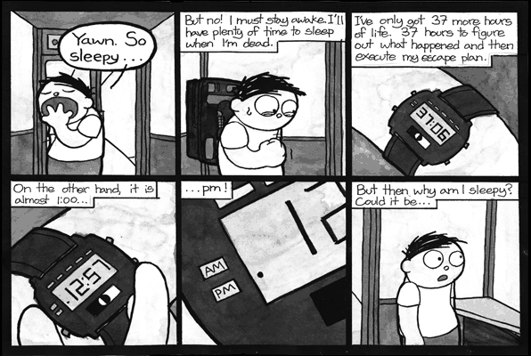
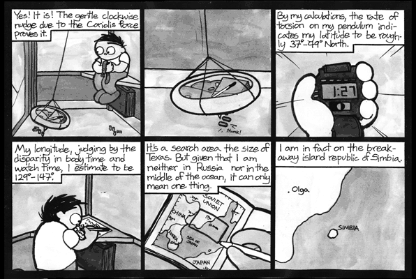
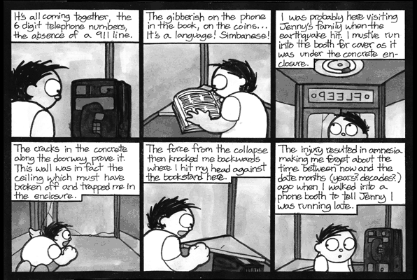
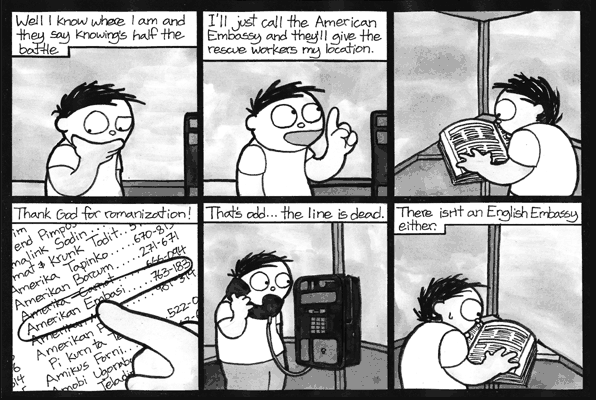
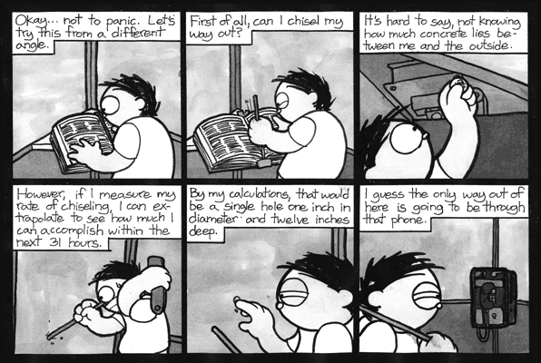
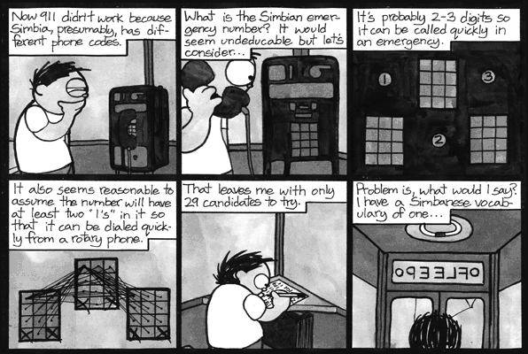
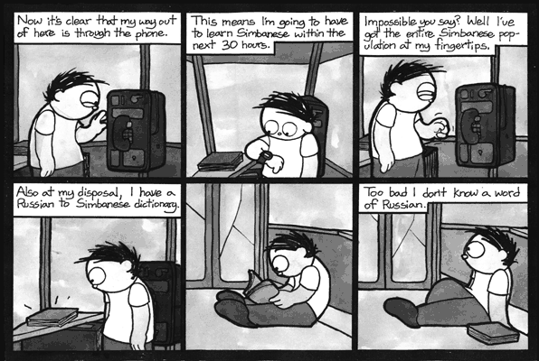
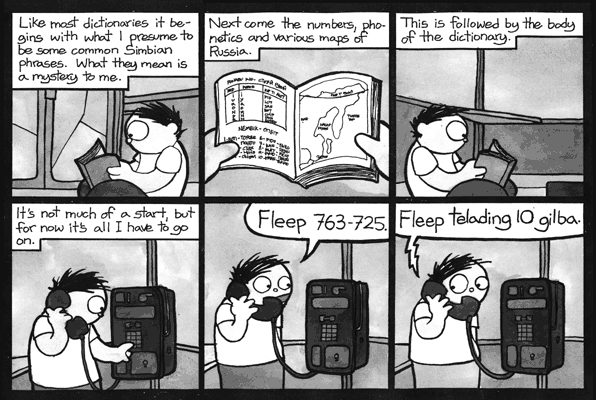
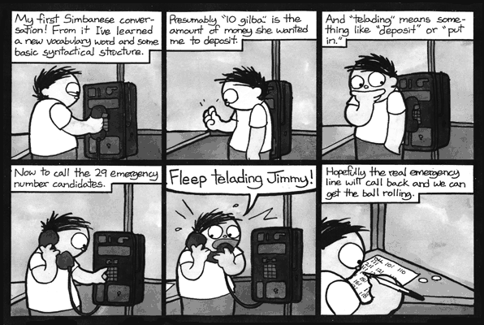
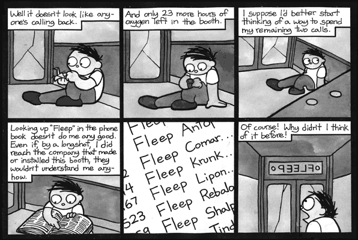
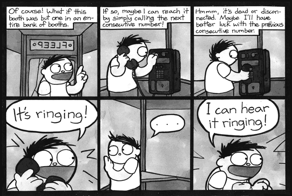
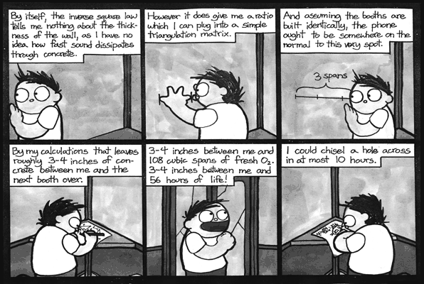
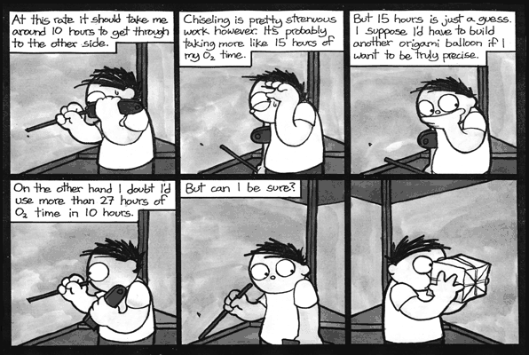
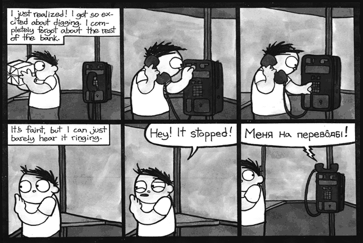
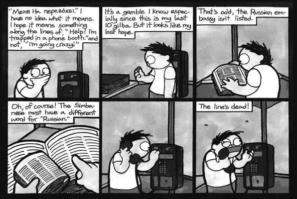
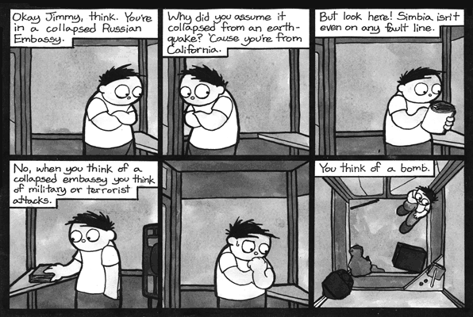
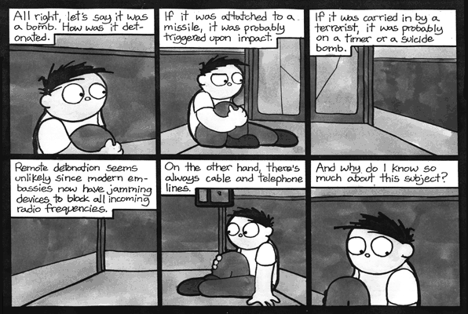
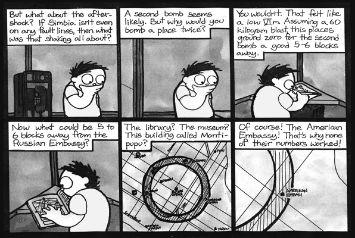
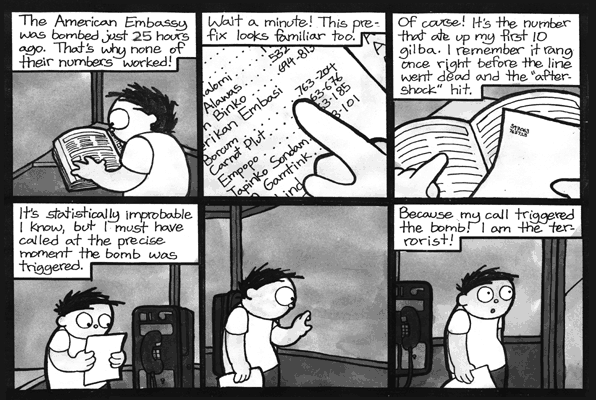
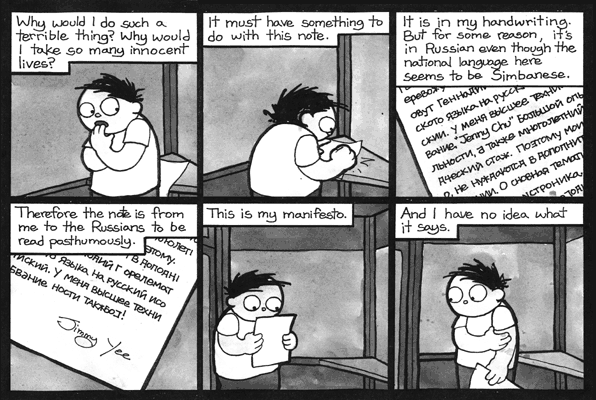
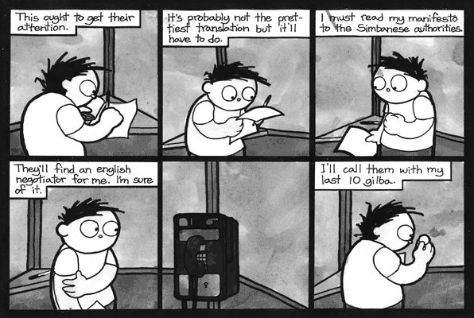
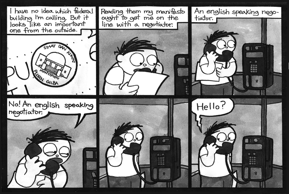
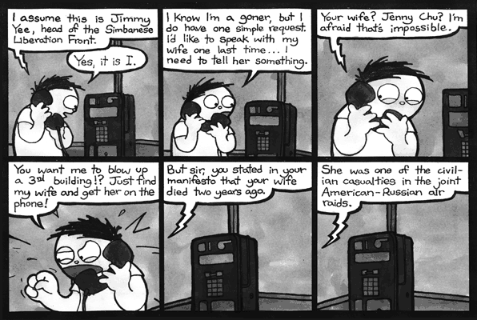
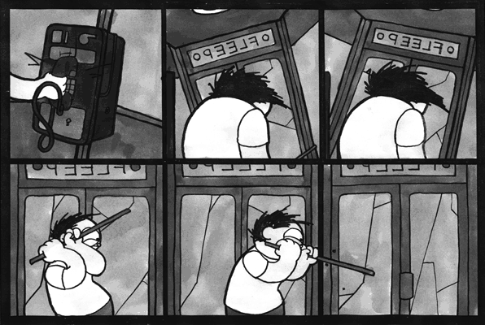
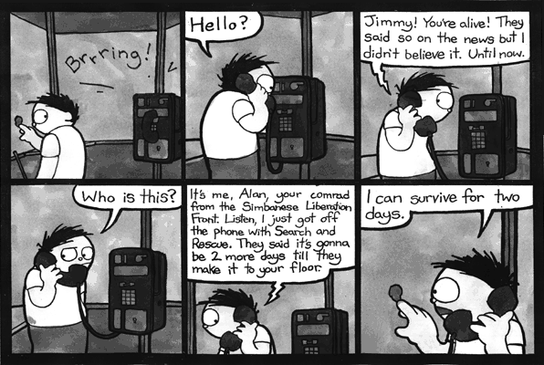
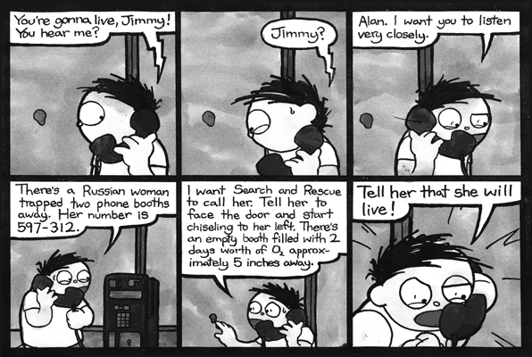
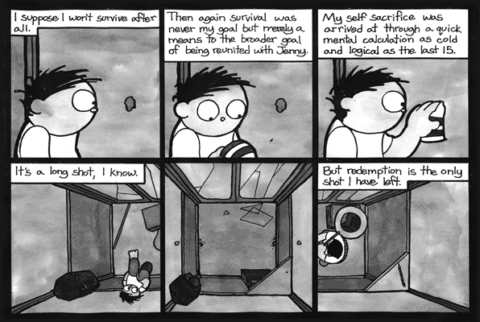
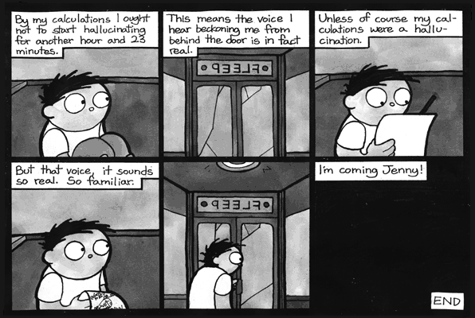
Sequel: Bus Stop.
collected by Aaron Swartz